| １２月３１日 晴れて比較的穏やかな天気、起きたのは９時、ご飯を炊いて１１時朝食を摂る。今年は正月と言っても何もしないからいつもの調子で良いのだ。先日メガネのねじがはずれた、気がついて直ぐ自分で修理をしたが眼鏡屋さんに一応見てもらいたい。ガソリンスタンドで灯油も２缶買う予定もあり出かけた。「ちから」で今夜の天ぷらそばを求め、メモした全ての買い物を済ませ帰宅した。プチが新しくセットした暖房つきの篭の中でぐっすり眠っているので掃除機を持ち出せない。 今３時前、近所のＫＢさんがちらし寿司とお正月料理を組み合わせたおべんとうを届けて下さった。おいしそう！！！ ゆずが一つ二つ残っていると思うから取っていらっしゃい！と、はさみを持たせた。裏庭のみょうがは何時もこの方が食べて下さる。千葉の海苔は皆さんに喜ばれるので暮に取り寄せて置いたので、お返しに包んだ。 こうして静かな大晦日が過ぎてゆく。 家族と離れて暮していても慣れたご近所の方達に見守られて暮せる。穏やかだった夫の人となりも皆さんの思い出の中に在ってお話に出る事しばしばだ。ゆったりした今年最後の日、掛け声が勇ましいみのさん司会の紅白を今夜はゆっくり楽しもう。 １２月３０日 気温が冬並みの穏やかな一日だった、 昨日スーパーのくじ引きで７等が当たり大きいボトル入りの「おいしいお茶」を貰った。散歩を兼ねて出かけたので重いプレゼントを下げて歩いた。賞味期限来年８月までと書いてあるので誰かに上げたい。 車を道路に跨がして洗車をした、バケツに熱めのお湯を２回運び奇麗に洗えた。車が済んだら、心に拍車がかかった。陽は傾きかかっていたが、勢いに乗り何年ぶりかで障子を一枚張り替えた。 まず、うどん粉一さじをお鍋で糊状に煮た、平らな縁のあるガラス容器に茶漉しでだまを取って滑らかにして移し、カッターナイフ、刷毛を揃えた。それらを置く台も必要だ。課題の障子は階下の庭面、家が傾いたのか以前から敷居から外せないので立ったまま外で作業をする。左側は網戸で見えないが、右はプチの引っかき疵で見るも哀れで気になっていた。使い残しの障子紙が４，５本有ったので、それを使った。低い椅子を用意して腰掛けて作業をした。（中腰は無理）濡れ雑巾でぺたぺた濡らし、障子の桟を剥した濡れ紙で奇麗に拭く。古い紙は奇麗に剥れた、糊は下の段から刷毛でスピーディに塗ってゆく。やっている内に何十年か昔の、当たり前だった暮しの行事が思い出され、これはお父さんの仕事だったのだ、と懐かしんだ。高い所は丸椅子二っつを並べ其処に立ち、安定して作業できた。未だ集中力は大丈夫だ！と嬉しかった。一時間内に済んで障子一面に霧吹きをする。やがてピーンとなって見違えるようになる。ガラスも簡単に拭き、玄関も掃除し水道のねじれていたゴムホースを奇麗な輪状に収めた。水遣りの少ない季節、枯葉も熊手と５本指の手で掻き集め大袋に詰めた。手は最高の道具です。草木の間に入り込んでいる落ち葉は５本の指が格好の道具になって活躍する。 軍手なぞは却って邪魔になる、僅かの時間に庭もすっきりした。 ゆづを切り４,５個づつを横、裏、の奥さんに声を掛けてお庭に落とし喜んで頂けた。花ゆずは小振りでも色、香り、は正月にぴったりの必要品。終わりに気になる左の網戸を開けてみたら左の障子も凄く汚れているし破れている。これは春にしよう。でも網戸で見えないから、ガラス戸を拭いたりして終らした。網戸に蝉の抜け殻がしがみついているのが風情があるからこれも其の侭残した。 |
| １２月２９日 昨日も今日も晴れ、冷たい一日だった。 古い筆王の住所録を新しい筆王の住所録に移し変えるのに、ひと手間掛かった。一年に一度の宛名印刷、名簿検めが昔のようにスピーディーに行かなくてこれが年なのだと面倒になる、以前「もう年賀状は止めます」と宣言した事が有ったが、その時に１３０通の賀状が届いた。思い直して奮起して又やる気になった。今年は売り出し時、１００枚買った（＋長い切手１０枚）所が喪の葉書が多いので、今年は少ないからと和恵さんに３０枚プレゼントした。 昨日刷り出してから足りなくなりそうなので宛名を間引いた。今日ポストに落とし概ね終った。これから画像の合成を楽しんでみたい！ 良いのが出来たら孫達に刷って送りたい。 お正月もこの毎日と同じ暮しが続く、コンビニもスーパーも結構何でも有るし、何しろ一日”２食生活” 本当に食べられなくなった。 夕食はご飯にして栄養、消化、を考える。 今日柳井さんが黒豆を届けて下さった、此処５年毎年頂いてお正月にご馳走になる。明日はストーブで白花豆を煮る、酢の物は作ろう。今年は好きな伊達巻も買わない積り、はっきりと体調が年を示してくれて拒否を感じる。一本買って暮から食べていた日はつい昨日だったような気がする。体は有り難い！ 考えてみるとパソコンを此処までやってきてよかったとつくづく思う。 ＸＰにして使い易くなったパソコン、まだまだ自分なりの遊び（勉強）が出来そうで眼に悪いと承知しながらも嫌なニュースや時間を忘れられる。 思いついた時に台所など何処ででも歩行の足踏み訓練をする、椅子に掴り膝を高く上げる、そしてストレッチ体操 ほんの５分、１００歩〜 これが１人暮す自信に繋がり、外を歩く時に役立ちます。 |
| １２月２５日 今日は静かな一日だった、あまとさんからファックスが届く、埼玉のみっちゃんから「いきいき」と言う雑誌の一月号が送られてきた、カタログ「ふくふく」も付いているので大分重くクロネコの配達便になっている、最近は宅急便扱いの郵便物が増えた。森光子さんと日野原先生の対談を読んだ後ファックスでお礼を出した。一日中テレビに見せられた＝惰性で見たと言う事。飛行船に乗っての、世界のお城の鳥瞰図は奇麗だった、外国の街、河、城、整った大自然を上から見る、それも低空だからよく見えて実に壮観、「河の工事をする為に城をつくる」と言う説明の意味が解らなかったが”観光”で外貨の収入を増やす為かな？と思ったり、旅行が出来ない私にとって、こう云う番組は一過性でも楽しく大らかな気持ちになれた。 １２月２４日 メリークリスマス 新潟の雪の被害が報じられている、背丈以上もの屋根の雪下ろしや、雪の壁に閉ざされて山に入れない猪の一生懸命はしる姿を見て切なくもなった、これも自然の災害なのだ。 昼間、プリンターのインクを取替えたがにじみが出る。これから再度挑戦！ |
| １２月２３日 天皇誕生日 今日も寒く冷たい日だったが雪は融けて道は歩ける状態になっている。この三日、外に出られなかったので今日午後買い物に出掛けた。休日なのでホームセンターは賑わっている。今日の主目的は脚立と豆電球、脚立、家には昔からの鉄の６尺物とウエストの高さのアルミの物が有る。１人暮しでは高い所は危ないからと皆さんが注意をして下さる、私はボーダーラインすれすれの安全度なので（自分でそう決めている）新しい挑戦？それと自分を試す好奇心も有る。実は先日来高い所の時計が遅れていたり（電池切れ）シャンデリア形式のリビングの豆電球が切れていて夜中起きた時、真っ暗で危ない。用心の為、枕もとに懐中電灯を置いたりして不自由をしていた、年末にこれを解消したい。 家族が居れば直ぐに直るこれらの事を自分でしたい為に先日下見をして置いた１、１ｍの脚立を買った、豆電球は２個入り９８円也。 脚立の上から二段目に跨って豆電球をつける事が出来た。時計も二段目で取り外しが出来た。要するに安定感が確りしているから安心して作業が出来る。これで人様を頼まなくて済んだ、やれやれです。 先日灯油用のポンプを買ったら６９円だった。私は敢えて自分に負荷をかける様にして現在の持てる力を維持しようと試みている。風呂の湯を洗濯機に入れるのもバケツで８杯、灯油はタンク一杯になる為には両手交互に８０回力を入れて揉む。以前はこれらは電動でやっていた。 １人で暮す為の努力です。 ２年前まではスポーツセンターの肋木で懸垂をしては握力を鍛えたけれど最近はご無沙汰をしている、力仕事は年なりのやり方を何時も模索している。これも何時まで続くか判りません。 それにしてもこの寒さ、大寒にはどうなるのでしょうか？ 昨日は冬至、かぼちゃの天ぷらをして食べたました。年賀状はＨＰのトップの玄関前の植物にしたいのですがうまく刷れず迷っています。 |
| 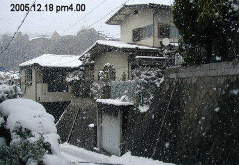 | １２月１９日 雪のお蔭で閉じこもり フエード・「ハワイ（１）」 が出来た。何回も挑戦した結果です。繰り返した事でコツみたいなものが記憶できた。やんじいさまが指摘された通り枚数を減らしたらスムーズに実現出来ひとまずホッとした。過去、フラッシュ・スクリプト・アプレットなど随分色々指導して頂いた御蔭が、今に繋がって居る事を思い感謝が溢れる。 孫の結婚写真はプライベートで気恥かしい面も有るけれど、外国に住む家族やお友達にも見て頂けるからとも考え古い自分に言い訳をする。 １２月１８日 ニュースで積雪 １７センチと言っていたが今夜も未だ降り続くらしい。 今日は電話が掛かりどおしだった、最後に話した相手が今日は良い声で元気そうだ、と言ってくれたが、話通しだったら声はかすれていない。夕方近く再び降り出した雪にカメラを向けた。庭木の上に積もった雪は揺すると私の上にどさっと落ちる。ＡＭ９時、郵便受けにある新聞を取りに出ただけでも危ないと感じた。あちこちからニュースが入るが皆高齢の人ばかりでケアハウスも話題に上った、皆一日一日が尊いのです。 |
| １２月１８日 只今１８日０時半、外を見たら雪が１０センチ位積もっている。道路は？と玄関に出てみたら車は真っ白に雪で化粧をしている。風があるから東から吹き付けて来るのだ。凄い！朝の積雪を予想した、３０センチかな？戸外の椅子の上に出して置いた寒暖計は今マイナス０・１度。 テレビをつければ悲しいニュースで心が埋もれてしまうのでテレビはストップ、午後、ハワイの画像をフエード加工する作業に掛かった。ここ一番うまく行かない、遂にやんじいさまに縋ったが画像の数を減らす事を勧められた。”Bookflip”は出来るがめくりが重い。今日も事にならなかった。 夜１１時すぎ、運動不足を感じ室内の雑巾がけを敢行した。 猫が居るからカーペットはこれに限る。台所も腕、足腰の屈伸運動になり、終ったら体が快適になっていた。一石二鳥です。今日のおかずは有り合わせで肉じゃが、糸こんも混ぜ美味しかった。一日２食が習慣になる、煮豆が間食。民生委員さんから℡頂く。 １２月１６日 午後１時郵便局でY.Yさんに小包を送る。それから広島屋へ行きミカンの試食をしてみた、今年のミカンはどうしてこんなに甘いのだろうか？とご主人に聞いてみた。ミカン作りの業者が競って研究をしている事、しかも今年は豊作で過当競争になって居ると言う。今年の状態が来年も続くのか？ 否 業者も考えるだろうからそうも行かないでしょう。 スーパーでは県外産の物が並んで紹介されているし、 始めて目にした、ミカンの需要と供給との差だった。もの余りの時代はこんな所まで影響している。 勿論、今年は台風も無かったお蔭も有ろう。広島屋では名前の関係上もあってか広島産がこれ又何種類もあり、試食している内に判断が怪しくなってきた。 葉つきの中手の大きいミカンは７・５キロで中身の数が少ない、晩生入荷は月末になると言う。 １０キロ箱の瀬戸田が妥当だとすすめられ、矢板へはそれに決めた。 １１月訪ねて来てくれた満と輝代さんにも送る、これで今年の行事が終った。 ささやかでも贈り物をするのは楽しい。 １２月１５日 千葉、横浜そして恵理の所へ荷物を送った、僅かな小物を梱包し送り状を書く。それだけでも大仕事だった。動作が鈍くなったのは心が急くと足元が危ないから勢い注意して行動するからだろう。 今日スーパーの大長みかんを試食した。昨日矢板のいくさんと話した折 甘いみかんで数が多い方が良い、と言っていたので・・・ 甘すぎる位甘い、どうしてこんなに甘いのだろう？自然じゃあないと感じた。今年が最後かも知れないと何時も思いながらの年末行事だけれど、贈り物は本当に迷う。 高松のY.Yさんにも電話をした、中々思うように快復しない、と、でもお元気に葉牡丹を１０個買って来て植えた話をされたのでホッとした。 昨夜アプレットを試みたが駄目だった、写真の数は５０枚、今日よく見たらファイルの名前を間違えたのが有った。今夜フォルダの名前も変えて作り直したが、今日はこれだけで止めて置こう、明日も外出になる。 |
| 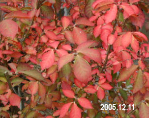 | １２月１２日 今日は実に冷たく寒い日だった、外へ出るのが億劫だ、しかし毎年の年末の用事が未だ済んでいない。夫の田舎へみかんを送りたい。スーパーで見ても今年のみかんはピンからキリまで有る様だ、甘いみかんは多いけれど、酸っぱさと甘さのある晩生のみかんを勧められたので遅らせて居たが電話で聞いただけでは不安なのでおもい切って見に出かけた。広島やのお勧めは葉つきの大きいみかん、山から切り出して直ぐの葉つきのもの、正月過ぎて甘くなるらしい。今日は売り切れで、次の入荷は週末という。葉つきのみかん５、６個を「試しに食べてみんさい」と袋に入れてくれた。レモンを買って、其処から宇品の森井さんまで走り、久し振りの顔合わせ、２。３年ぶり、車の中で３０分お喋りして帰途につく、もう薄暗くなっていたがラッシュだった、駅前を通り回り道してちからで夕食に、てんぷらうどんとお稲荷さんを買い、真っ暗な我が家に着いた。出かけたのが３時だった、６時前なのに真っ暗だった。老人の運転、ご近所で心配をして居られるかも知れないと、心が少し痛かった。 運転は大丈夫だったが夜の運転は極力止めようと自分に誓った。 ６時半柳川さんからお電話頂く、風邪を引かれ芯熱が取れないと声がおかしかったが、お正月は調布の康子さんのお宅にご夫妻で行かれご家族で過すとの良いお話だった。 ９時半、田村さんから℡日展に入選したと連絡あり、４０分位話し合った。 夜は、昨日の続きの写真のリサイズと修正の作業、赤眼がうまく行かない、人数が沢山なのでそれはカットにした。ペイントを使って背景やおかしなものが消せるので夢中になって今、夜中の２時を過ぎている。 １２月１１日 昨日NHK暮しと経済の時間でリバース・モーゲージの話を聴いた。 こう言う制度がある事は私のように収入の少ない者には大きな救いだと思った。 今日は前庭の落ち葉を集めたり珊瑚もみじの枝きりを行った。お父さんが「もみじは秋に切るんだよ」 と教えて下さっていた事を思い出しながら新しく伸びた余分な枝を高枝バサミで沢山切り取った。珊瑚もみじの枝は紅色で美しく、捨てるには惜しい気がした。 ニシキギが余りにも奇麗なので又写真を撮った、小さい緋色の実が未だついていて愛しかった。側溝も一回目のお掃除が済んだ。 恵理ちゃんから電話でエレンダニカの枝の切り方を聞いて来た。今度観葉のページにでも載せましょうね。 夜なべにスライドショーの勉強をしているが元の画像をなくしたら大変なので、サイズ別、名前別、で幾つものホルダがデスクトップに並んでいる。何とか自力で作ってみたいと思っている。 |
| １２月１０日 寒い日が続く、気温は一月並らしい。 午後一時、この団地の友の会のバザーに行く、豆類や花鰹など買い込み帰宅。ついでに庭の落ち葉をさらったが、見上げれば未だ梢に葉が結構残っている。 灯油が１２９０円に値上がりした、何を置いてもこれだけは贅沢したい。適当な湿度を保つから体にも良いし植物も元気だ。 前田さんに電話を掛けてみた、お正月は千葉の娘さんの所に行かれるそうだ。春まの暮しを楽しまれると言う、嬉しそう！９４歳になる福山の叔母さんが施設に入られたが頭がとてもハッキリしていて、二人でオセロをやったら二回とも負けたと笑って話して居た。施設では出て行ってくれと言われているそうで私にも響く話だった。 ２月８日 ６４年前戦争に突入した日 記憶の断片は様々な形で浮かび上がるが瞬間で消してしまう。 最近の世の中の変わった事、すさまじい変化に思える。テレビを見て情報を得て自分に取り込む事や、感じる事で生活の軌道修正をする事もある。実際の暮しに余り変わりはないのだが、全てに便利になった事は確かだ。今月から新聞をとり始めた。ざ〜っと目を通すだけで深くは読まない。細かい字が読みきれない。２ヶ月間お付き合いでとる事になった。 今日の計画は髪を染める予定だった。午後２時、用意周到に準備して少ない細い髪の毛を染めた。グレーになった頭が侘しかったのです。ようよう落ち着きました。真冬の寒さに植物は全て家の中に入りました。 夜思い立って恵理ちゃんの写真のサイズ変更の作業に掛かった。約６０枚を実行した。 縦長は後日。 |
| 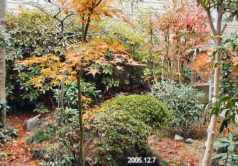 | １２月７日 左端の木、枝垂れもみじ（手向け山）の落ち葉が雪の後、地面をなんとも言えないしっとりした色で覆い尽くした、美しい！ 手前のもみじは小鳥が落としていったもので名は判らない、椿の蔭の所為か未だ葉っぱが付いている。 右の赤いニシキギと下のどうだんつつじが、この秋最後を飾ってくれている。写真を撮った後、熊手で落ち葉を掻き集めた、運動になり体がシャンとした。 でもいっぺんには片付けない、道路から見える所を奇麗にしただけで終る。 ２，３回に分けて掃除を楽しもう。 うめもどきやまゆみの実は既に小鳥についばまれたようだ。 午前、午後と洗濯を２回した。大きい綿毛布シーツは夜干しとなった。 １２月はこんなに寒かったかしら？と去年の日記を見てみる。真理ちゃんが仮縫いに来た時季に当たっていた。ツイードのやりかけの洋服が気になる。あれから一年経つ。 今年は滅法寒く冷たい！ 一日の内何回か頭の中を去来する思いが有る、老いて徒に命永らえるのはどうかと思う。その反面１人で何処まで歩めるか？試したくも思う。 この頃いやに几帳面に生活を律しようと努力している自分を感じる。ただ惜しむらくは記憶の面が実に実に悪くなっている、年をとれば致し方ないことだが、生活面で危険な事が無いようにと火（ガス）水、電気を使う場合はそれに集中する、掛け持ちはしない。 だから一日の実働時間が少ない、慾は出すまい！が信条だ。 ストーブが赤々と燃え、プチがゆったりと寝そべる。今日もまた一日が終る。 |
| １２月５日 夜明け方、この冬始めてプチが寝床に入ってきたので寒いのかな？と思ったが朝起きてみたら庭木に雪がこんもり積もっていた。時間が９時をまわっていたので道路の雪はとけていたが空気が冷たい、初雪だ！ カメラで庭の雪を５、６枚撮ってみたが中途半端に終った。 午後、郵便局と、お薬を頂く為に医者に行く。コレステロールの薬３０日分と、うがいのイソジン２本を頂く。 １００円ショップへ寄って見る。どうしてこんなに安く売れるのかしら？と思える位なんでも有りだ、小さいアルミ鍋、ストーブ用の脚付きもち網（小）茶漉し、アームバンド、等、刃先がカーブして缶きり兼用のキッチンバサミは好奇心で買ってみた。１００円！野菜も切れるようだ。 昨夜、和恵さんから圧縮フォルダ３個の写真が送られて来た、ファイルを全部処理出来たが、早速今日はと、おいそれとページ作りの作業に取り掛かれない。草臥れたらしい、私の年齢だとこれが当たり前に思える。 今夜、クローズアップでスパイウエアという新種のウイルスの話しをしていた。ウイルスは怖い、お金が無い者には関係ないとも言い切れない様だ。 不気味な話だった。 １２月２日 絵の部屋のリンク直しをしてみた。ささやかな努力、でもマイドキュメントの中身の整理も少し出来たし、何となくパソコンが軽くなったような気がする。恵理ちゃんの写真はアルバムでは物足りなく和恵さんからCDを送って貰ってからの作業になった。ゆっくりやろう！パソコンに向かっていると、関連作業が出てきて面白い、のんびり取り組んでいる。 庭の紅葉の写真を撮ったが、ぶら下がっているみかんやゆずを切り取らないと重そうだ。 みかんは５０個無いくらい、ゆずは今年は少ない、家で使う位は取れそうで一昨日先ず蕪のおなますに使ってみた。色、艶、香りが新鮮だ。 （H)さんが果物を届けて下さり、白花豆が美味しいとて保存瓶ごと持ち帰られた。豆をストーブで煮る事は楽しい、ふっくら煮える。 だんだん表へ出ない様になった。 これではいけないと思い、朝、昼、晩ストレッチ体操を５分ぐらいする。 今日ビッグローブから回線終端装置利用料の説明メールが届いた。７月から何にも払っていなかったのでホッとした。光りパックにしてからは電話料がとても安くなった。私の挑戦は正解だった様だ。 ８ |
| １１月２４日 睡眠時間を延ばしすぎて失敗した日、燃費節約とばかりに布団の中でアルバムの構想を練ろうとして、眠ってしまった。夢は見た。ろくでもない夢のようだった。起きて朝食を作るのが大儀だった、パンで軽く済ませた。午後も夜もテレビに流された。夕方Nさんがお野菜、蕪と大根と見事な柿を届けて下さり、玄関立話をした。先日頂いた紅茶のフルーティな香りが忘れられないので大勢の方にお勧めした話をした。香りがアロマセラピーになり、うつ状態から脱した！と大げさに（実際そうだった）感謝した。柿は毎年頂く、奈良から送られたもので今年もお父さんや道雄にお供えしたが、お父さんが生前この柿の熟しを風呂上りに美味しそうに召し上がっていた様が目に浮かび、写真に向かって話しかけた。大きな美しい色艶の柿！ 此処で芳しい紅茶を入れました！！！マスカットの香りです。もう１２時過ぎたのにムード派の私は香りに魅せられてゆったりとした気分です。大丈夫よ、ねむれますから・・・・・ 今日はおでんの下煮（明日生揚げや具を入れます。）と白花豆をストーブで煮ました。（半分は甘く、半分はサラダ用に試す積りです） 一日いちにち本当に尊く思えるこの頃です。 １１月２３日 勤労感謝の日 毛布を上下に使うようになってから安眠できる。最近はとみに鈍くなって羽根布団だけではうそさむい状態だったのに気がつかなかった。朝の寝床から離れにくい位、快いので今朝も起床が１０時になった。毛布の下に（電気敷き毛布使用） 今日はYさんが短歌の老先生を案内して一緒に来訪された。京大出身８０歳。過去に高校の国語の先生もなさっていらしったらしい。共通の知人が有ったので、話に花が咲いた。２時間で帰られた。 和恵さんから可愛いチューリップ模様のマグカップが贈られて来た。来広を断ったのでお土産を送ってくれたのだ。パソコンでハワイ等の写真の整理をしようとするのだが、纏めが面倒で中々取り掛かれない。洋裁も其の侭だ。 目を始め、体力が大分落ちている。写真の整理、賀状の事など、面倒だが今年までは頑張りたい。 テレビニュースで建設設計事務所の大きなミスが報じられている。住人を思うと気が治まらない。全く、漸くマンションを入手出来たとホッとしている家族の心を思い遣ると、こちらまで頭がおかしくなりそうだ。 間もなく師走の声を聞くようになる。 １１月２１日 今日は三つの用事を済ませたい。 １は宅急便 ２は屋根屋さん、３は友人のお宅訪問 先ず素晴らしいお天気に毛布を２枚干した。大分寒くなったから寝具を取り替えようと用意をした。午後になりクロネコへと走る、今日はこの方角の延長線での訪問だ。 屋根屋さんで用事を済ませ、お土産に焼きたてのたこ焼きを二人前頂く。次のあまとさんの家は二年ぶり、以前のトンネルへの道が整備されて変わり、ちょっと手間取ったが記憶は確かだった。ご主人は足の傷がすっかり治癒され長いすで日向ぼっこをしておられた。 あまとさんは山の手に住む娘さん家族の大学３年のお孫さんの誕生日だとかで、お赤飯を作っている最中だった。家族の為に実によく働く人だ、出来立てのお赤飯を沢山頂き、旬の白菜の漬物も頂く。たこ焼きを一人前、ご主人に置いて帰宅した。 毛布を取り入れ、お昼抜きだったので夕飯を兼ねて、たこ焼きや、お赤飯を早速ご馳走になり、一時間休息をとった。今日は大出来だった。これからは体の調子の良い、そしてお天気の日に逐次面会がてら友人訪問をしようと思っている。 Yさんは薬を減らして快適らしい！本当に良かった。 辞書を贈ってくれた恵理ちゃんに感謝！ |
| １１月１９日 土曜日、ヤマサキへ頼んでいたものが届く。ヘヤーエッセンス・ラサーナ等、 カールヘッドに替えられるコンパクト・ドライヤーがプレゼントされた。 灯油配給車、橋本さん （２缶） 朝、救急車が団地の上に上がっていったのでYさんのことが気になり℡したら今朝も６時から散歩をしたと感謝されホッとする。 西条の林さんから℡今、お元気な老人（１００歳）のテレビを見ている、と言う、１０分番組、私も見たが学者で素晴らしい方だった。この頃皆さんが心配して電話を下さいます。感謝です。 昨今、気がついた事があります。出先で小さなミスが有ると途端に自信を失い後の行動が不安になります、早めに引き上げます。 今夜、NHKスペシヤルで「高倉健がであった中国」を見ました。とても感動しました。 寅さんも見たし、テレビ三昧でした。 １１月１７日 郵便局へ振り込みに行く、最近コンビニで済ませているので、うっかり住所欄の書き込みを忘れた。連日自分の見落としの老化現象にあきれ果て自尊心が悲しむ。お人よしのついでに昨日の薬の事を片付けないと無責任になるので、今日もサービスの日に終った。恵理ちゃんから届いた辞書を持ってYさんの家に行く。薬の本は難しいのか読んでいないと言う。 飲むとおかしい薬が有るなら先生に言えばよいのに、と言ったら、「先生はコンピューターを見て何かやっていてこちらを見ないし、カルテを書かない」と言う段階で、パソコンを理解できない層が多いかもしれないと感じた。で、それはカルテと同じで、先生は話しを聞きながらパソコンに書き込みをしていらっしゃるのだと、医者の立場になって話した。やり取りで自分の頭がおかしくなりそうだった。 薬７種類、どれがどうしてどうなるのか普通の人には解らないのだ、うやむやに服用しているので副作用が出て、それが人間性を変えてしまう場合もある。この場合精神科領域の薬が２種類あり、本人も最近薄々不安を感じていたらしいので、それをチエックした。抗うつ剤をはずして精神安定剤だけで様子を見ると言う事になり、その結果を踏まえてお医者様に報告し、意見を聞くようにと、話した。使わない薬を封筒に納めていた。薬の名前はカタカナでややこしく、おまけに１錠ずつバラにしてあったので、私の頭の方がおかしくなった。薬局から出る薬の説明書にマジックで印をつけたりして２時間位掛かったが、とても安心したようで、喜んでくれた。 彼女の努力を信じたい。 私は今夜も何もやる気が起らない、人と接すると一番消耗するのだ。年賀状、切手と正月の用意をしたが、喪中の葉書が毎日届く。 パソコン作業を休んでいたら、皆目 わからなくなりそうだ。 セントポーリア達は朝方ガラス戸を白く曇らせたワーデイアンケースの中で健やかにみずみずしい。裸にブラッシングしながら、語りかける ホッとする癒しの瞬間だ。 そして今日もやるぞ！の自信に繋がる。 １１月１６日 天登さんから電話を頂く、最近の様子を尋ねて下さった。私が家族が来てくれるのを断った話をしたら、彼女の７０台のお友達２,３人も体力が無くて、１人居を大切にして暮していると話された。生活条件はそれぞれ違っても、老人は皆同じだと感じた。 横浜宛の宅急便を出して帰りにＹさん宅に寄った。凄く太った感じなので驚き、注意をする。先日来この人の飲んでいる薬が気になって薬の内容を調べてみたら、抗うつ剤、精神安定剤（朝夕） 催眠剤、コレステロール、便秘薬、等、７月の処方が続いている。 今日はテーブルの上に薬の本と「私は殺される」という題名の、薬に就いての福田（筆者）氏の本が載っていた。誰かに話し借りたのでしょう。 私がちょっと注意したら、結果が過激だ。 偏った考え方をしなければ良いがと思いながら、医者が出す薬について自分の体で試しつつ判断してくれると良いがと、思っている。 長い期間飲んでいる薬は急には切れないから徐々に自分で自分を観察して欲しいと願った。一朝一夕には事が運べないものがある。 関わりあったら責任がある。 ７３歳のこの人は理解力はあるが自分の事なのに他人事の様に興味本位に走りやすい。 自分の中に客観的な自分を置いて管理するようにと勧め様と思っている。 友人の薬の事が質問したいと恵理に話したら、何でも載っている電子辞書をプレゼントして呉れると応えた。 ２日目にそれが届いた。 余りの速さにびっくりした。クリスマス・プレゼントと言う事だったが有難い。 内容は凄い！何でも出ている、早速薬を調べ辞書は役に立ったが、判れば解るほど医者の責任の重さを感じる。 ちょこちょこ歩きをする彼女を見て疑問を持ち、心配でこう云う結果になったのだが、 先日以来、三日みぬ間の二重あごに今日は又ぎょっとした。 間食にお菓子を食べている、妹さんが届けるそうだ。お腹がすくと言う。薬の所為か病気の所為か？ 心配は今日は此処でやめよう。これも切ない話です。 １１月１５日 紀宮さま黒田慶樹氏ご結婚。テレビで祝福申し上げた。 １１月１４日 矢板の敏子さんの葬儀、和恵さんが３人の代表で出席してくれる（電車）夜、桜井家からの℡、２４時、横浜帰宅後、報告℡有り、有難う、本当にご苦労様でした。 午後３時山本氏から℡、午後４時半、ご夫妻の訪問を受けた、色々な話が盛り上がり、７時過ぎお帰りになったが、家族の関係に近いので楽しく過せた。奥様は俳句も日本画も優秀、師匠亡き後、新たな若い師を得たと報告を受けた、前向きに活き活き話された。修氏は７３歳ダンディで優しい！ 午前中三越外商から℡が有ったので過日の新聞広告について質問をしたら、調べてくれて、２,３度電話が掛かり あれはテレホンショッピングだった事を知らされた。（翌日カタログが送られて来た、未開 早、関心は失せた） 広告を隅から隅まで確り読まなかった私のミス、いや老人に有りがちな見落とし！の失敗だったらしい。 毎日何かしら課題が起り、それに対応して半分忘れ一日が終る。でも心に引っかかる事が多い。 １１月１３日 朝起きたのが１０時半、寝床の中でゆっくり準備体操をして起きる。今日は亥の子まつりらしく先刻子供達の声が聞こえた。障子に光りが射してお天気は良さそうだ。プチは眠っている間は付き合ってくれるが、カーテンを開け始める途端に缶詰を要求する。 昼近く朝食をとり、午後からセントポーリアの植え替えに掛かった。 只今１４日午前３時過ぎ、毎晩遅くまで起きているのは私の家だけ、少し気が引ける 気を使いながらも３日目のセントポーリア植え替え、これでほぼ終了。 茣蓙を敷いた作業後の部屋も音を立てないように奇麗に片付けたし、夜遅くは集中力も倍加するのか、効率的に活動できる。 そうそう！ １２日夜、ご飯を炊いてラップに包み冷凍した時、二つ分を梅干を入れて海苔を巻いたおにぎりにして美味しさの余り２個（２食分）とも食べてしまった。おかずは納豆に刻み葱、それで夜中まで作業し、今朝 割りに元気だったのは、お米を食したからだ！と感じた。忙しい余りパン食が手っ取り早く、最近その気楽さに流されていたが、暮し方を夜型にすると少し食事も違うように思える。私は低血圧な為、朝が弱いのかもしれない。朝型に改良しようとしても午前中ぼや〜っとしていて何もせず午後から一日が始まる事になる、だから自然に（夜型）に戻ってしまう。 息苦しかったり、風邪の症状が去り行かぬので、最近むかしつかった、「健康たわし」でブラッシングをやり始めた。寒い朝はストーブを点け、寝巻きを脱いだら裸で直ぐに始める、この刺激で寒さを感じるまが無く、快い皮膚の目覚めを感じる。 先ず首、肩、腕の内側から始め左右、胸 腹、足 と紐が付いているので最後には背中もキュッキユッツとこする。脚は椅子を利用し、爪先から踵も 体中をこする。これを始めてから膝痛が殆ど無い。血流がよくなるのでしょうか？ 裸でも全く寒くないのが不思議です、何しろ体中、力を入れてこすります。 たわしと言っても、白い健康たわしです。（私は使い慣れた大昔のものが有る）たわしは時々日光消毒をします。弱い方 お試しあれ！！！ １１月１２日 只今夜中の２時です。 パソコンを開けないで過した３日間、振り返ると漠然としている、でもノートにはびっしり書いている。 やけに忙しかった事は確かだが二つの訃報が有り、悲しい出来事の連続ですから老人にとっては辛い記録になります。 一つは今日の事なので最後にしよう。 明るいニュースも有った。秀樹さんが身障者の水泳で銅メダルを頂いた事。親子して今後の励みになると思う。弱者に対して国が余り経済的圧迫をかけないで欲しいと心から念います。 ８日には三越へ出かけた、新聞広告に出ていた広告が気になったからだ、でも目当てのものは実在無く、おとり広告だった。会計に苦言を言い置いて帰った。 ”淡水パール長いもの５０本限り！” 写真も有った、孫達の顔が浮かぶ、ペンチでネックレスの修繕が出来ると言う和恵さんがアレンジするのがたのしみだった。未だふらつくのに車に頼って出かけ空振りに失望した。バーゲンのブラジャーを買った。何十年ぶりだろう、８７歳の老婆に見られないのを幸いに、アンダーバストを計ったりする店員さんの言葉に従った。しゃれっ気が有るから私は未だ大丈夫だ！それで駐車料を稼いだ。 無理をせず一時間で引き上げ、友人のマンションの下で携帯をかけ５ヶ月ぶりに顔を見せて貰った。６階から降りてきた彼女はげっそりやつれていてびっくりした。 ごきょうだいに病人があり、ご主人も夜中の咳き込みがひどく、男の人は何故病院に行きたがらないのかと、嘆いて居られた。私は呼び出したりした事を後悔した。 老人にとって知らない方が良い場合が多くなった。思い遣ると切なくなってしまう。 今朝７時矢板から電話が有った。夫の甥の奥さんの訃報である。優しい人だった、８０才になっていると言う現実が推し量れない。何十年もご無沙汰がこう云う結果になる。脳裏に描く映像は昔の面影でにこやかだ。老いた甥も病気になっていると言う。 和恵さんに携帯をかけ相談した。長男は多分行かれないと思う。 道雄の時に来て頂いているから告別式には矢板まで走ってくれると言う。夫の故郷は私にとっても思い出深い。和恵さんに全て頼る事になった。 夜までに夫の姪達姉妹に電話を掛け故人の話や長い歳月の隙間をつなぐ話をした。人のさだめは色々だ。 遠く離れて一人、私は強いなぁ、強くならざるを得ない。だから自分は自分で守ろう、日常、充分気をつけて暮す事だ。昨日から夜なべにセントポーリアを植え替えている。道具を出しっぱなしで広げているがブランチの後は眠るし、スタジオパークは渡辺あゆみアナ達コンビの話術に惹かれて時が経つ、猫との付き合いもあり肝心な作業は中々捗らない。 最近人と話をした後、とても疲れる話をしたら、和恵さんが来広を中止してくれた。２０日からの予定で飛行機も決まっていたのだ、来ても欲しいし、来たら喋って伸びてしまうだろうから怖くもあった。 もう少し生きていたい。 来春セントポーリアの花を奇麗に咲かせて、二階で何かをして見たい。 私は一人が好きだからゆっくり暮せば充分楽しめる筈だ。今が瞬間的青春かも知れない、貧しくってもやりくりも楽しみに変えてしまう事も自信ありだ。 今夜は訂正しながら此処まで書いて終り、２時間近くが経った。あしたは、いや今日は土曜日、ゆっくり朝寝をしよう。今プチもおしっこをしてきた、床暖房さえしておけば起こさないでしょう。 |
| 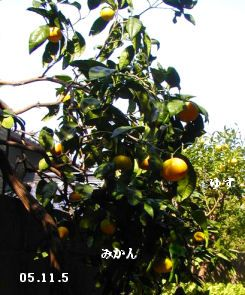 | １１月 ６日 雨の一日でした、県知事選挙の日なので４時、雨が上がったのを幸いに出かけました。前日の疲れが残っているので車のお助けを借りました、投票に行く人はまばらで係りの方に気の毒なようでした。帰りにスーパーに車を止めて置いて、例の公園をゆっくり歩いて４周半、汗ばむ位歩いた後、買い物を済ませ、車で帰宅しました。 大切な買い物を忘れ８時前にセブンイレブンまで歩いて出かけましたが空気が澄んでいて足の運びも楽です。公園を歩いた事がこんな結果に繋がるんです、歩きなれよう！と思いました。 最近ノートで日記をつけています。１００円のピンクの表紙でテーブルの下に置いてあるのでさっと開いて書けます。雑記録帳に今書いている調子です。メモ日記として、忘れない為に始めましたが案外、効果が有りそうです。一番に最近字が確り書けなくなっている自覚がはっきり確認出来ました。パソコンを打つ方が楽ですが、やっぱり字は書かないと駄目になりますね、昨日からお悔みの手紙を書きに掛かったのですが、今日も午前中苦しみました。何とか最後の便箋２枚で纏めましたが嘗ては心のままに運べたペンが言う事をきかず、これではいけないと感じました。 ボールペンが曲者なのかもしれません。パーカーの気に入った万年筆が駄目になってから何十年も経ちます。明日の命が判らないのに、絵を描く約束をしたり、万年筆を買いたいと思ったり、人って皆こう云う思いで生きているのでしょうか？ 亡くなった姪は白血病だったそうです。今日ニュースで本田美奈子さんが３８歳でこの病気で亡くなられたと聞きました。切ないです。 |
| 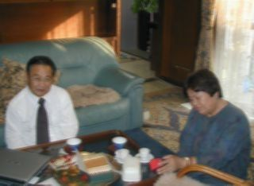 | １１月４日 大好きな人たちの訪れ！！ 偶然！ こんな事ってあるのかしら？ 右の人は夫の次兄の子（姪）、明日からの岡山国体に息子を応援にやってきました。（予定ずみ） 左の人は私の次兄の子（甥）、福山へ用事で来たのでわざわざ、私の家に寄ってくれたのです。（不意） 二人ともあったか〜い人,６０代。 偶然午後1時に広島に来て、それぞれタクシーで私の家に着きました。 いっぱい話をしましたよ。 ５時前、二人を送って私が運転して広島駅まで行きました。 家に帰り、1人になって、とても寂しい思いが心を通り過ぎて行くのを感じ切なかったです。 私が高齢なので会いに来てくれたのでしょう。 嬉しい心やりですね！ パソコンより絵を描きなさいと勧められました。小さな絵を描こうと思っているのでその気はありますが、洋裁も抱えて居るので辛いですね。 洋裁は私一人で最後までは無理なので、彼女達の在り方しだい？私任せは最早駄目です。絵は本当は油をやりたいけれど、まぁ色の奇麗な日本画を描きたいですね。 サムホール・〜6号まで位。 二人と、小指で”げんまん”しました。夢で終らないようにしましょう。 明日からの国体、どうぞ無事良い成績であります様にお祈りしましょう。 |
| 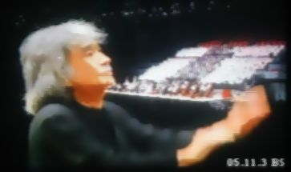 | １１月３日 文化の日 ３時から平和のメッセージ・コンサートがＢＳで放送された。
テレビを瞬間写しました。電池切れでこれ一枚のみ。 ノイズで小沢先生の画像が見苦しくなり、申しわけありません、 本当に素敵なコンサートでありました。日野原先生の詩の朗読、小沢先生とのコンビがとても温かく、その日前半の牛田小学校の教室も映りあの後お話を聞いた私は、回り灯籠のように全て映像になって頭の中に残っています。吉永さゆりさんの詩の朗読にも涙が流れました。合唱の中に二人の友人の顔も見つけました。 日野原先生はこの日は文化勲章も受けられて素敵な記念日でした。 |
| 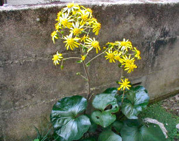 | １１月１日 つわぶきの季節 冬の花。 今朝から中国新聞が一週間サービス配達をしてくれる。何ヶ月ぶりかでドカンと重い刷り物が届いた。その後、直ぐに注文係が来たので１２月、１月の配達を頼んだ。しかしこの情報の多さを如何に処理できるか？ 正直、無ければ不自由が有った。が、それなりにのんびり出来た。こうなったら前向きに利用しよう。朝の早起きが必要となる、案外良い転換が出来るかも知れない。 今日薬を試みた、朝憂鬱で如何にもならない、入浴を試みたが却って疲れてやる気が無くなった。で、私は寝る時に服用していた精神安定剤を一錠のんでみた。一日３回までは良しとされている。抗欝剤を飲むよりはましだろう、明らかに私の場合うつ状態なのだ。（生きるのが面倒になって来ている） 午後体が軽くなり、多少明るい気分になっている。ふっと救われた感じだ。 歯医者に電話を掛け予約を早めに変えて貰ったり、玄関のワーディアンケースを移動させたりして植物の置き場所を作ったり私らしい行動が自然だ。当分これで様子を見ようと考えた。 ３日 （文化の日） ＢＳ２ 「世界へおくる平和のメッセージ」（日野原重明・小沢征爾）が有ります。 ７３分に再編集したものが、１１月１２日（土）１９：３０〜２０：４３ ＮＨＫ総合 このほか年末の夜の予定で ＮＨＫ総合・全国放送が有るそうです。 |
| 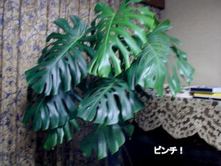 | １０月３０日 食事が大切！ 身をもって知る。今日は居間だけを丁寧に掃除した。ソファーもテーブルも動かし昨年まで使っていたホットカーペットを２階から下ろし慎重に行動して暖かいプチと私の部屋が整った。ストーブが赤く燃え銅鍋の湯が音を立て居る。早、冬のたたずまいだ。しんどかったのでこの部屋だけで掃除は止めたが、ふと玄関を見ると、モンステラの姿がだらりとしている。木根が半分枯れている、葉が萎れているではないか、手遅れだ！ １人得々と植え替えたが、時期が遅かった。葉が多過ぎるのかも知れない？下の葉一枚、さよならをしたが、当分、居間に同居する事にした。葉裏に霧水を撒布する必要がある。 プチはご機嫌だし私も多分これで調子を取り戻せそうだがついでに、玄関前の温度を測ったら１４度、夜中を思い植物全部を玄関に入れた。軒先のものも寄らば大樹の陰的に片付けた。 今日は２回目の食事をセブンイレブンの、カツのデミグラスソースをかけたご飯を食べた。届いたばかりだったらしかったが美味しかった。（¥５００）疲れている時はこの手で行く事に決めた。後は牛乳とお菓子やりんごですます。息苦しさが軽減されている、有りがたい。口中の清潔を心がける事が大切。食後の歯磨きと、寝る前の消毒うがいは必須です。 |
| １０月２９日 お天気が良いので、ハナミズキ、柏葉あじさい（小） この二つを大きい素焼き鉢に移した。裏の不要物の片付けもしてすっきりする。 夜さちさんに電話をして最近の体の状態を話し合う。食欲を起こさせるためにビールの小缶を飲む話をしたら。亡き姉上も小さいビールを飲んでいたと話してくれた。努力して食事を摂る話である。 今日も食事が如何に大切かを感じたので、夕方、惣菜を売っている駅近くの店に行って見た。 脂っこいものを避けて１０種類ほどを選んだ。暮れ方の帰り道を登りながら、車が、私の家族である実感に、生き物の如く”古くるま”が頼もしくなった。 もっと明るい昼間に買いに出かけよう。 あつあつの揚げ物や金平やサラダ、胡麻和え、焼き魚、酢の物等、白菜の漬物少々が美味しかった。 惣菜を作ることが少々大儀になって来ているから、この術を利用しよう、と考えています。そして食べて元気にならねばならない。 プチは先日買ってきた小さい暖房カーペットを占領していびきをかいて眠っている。覚めては食べて又眠るプチ！ 私も真似してみよう。 １０月２８日 昼、林真貴さんから℡あり、私は先日の二人展に遂に行かれなかったが、今後の計画など話してくれる。文香ちゃんが３人のママになったと言うニュースも聞かせてくれた。 今日は予約を取ってあった歯科へ行き、歯が一応使えるようになった。４日の午前もう一度調整して頂く予定。 スーパーにアメリカハナミズキが売られていた。（丈１メートル）蕾がいっぱい付いている。店前に元花屋さんのご主人だった方がいらしって、来春咲くよ！と言われたので、既に紅葉も始まっているこの木を私は買う事にした。この命、明日が判らないのに植えたい願望に押し切られた。 道雄が植えたはなみずきが、今年奇麗だったと和恵さんに聞いていたからかもしれない。 偶然通りかかったやたがいさんが、家まで植木鉢を持って送ってくださった。その後、近所のOさんが訊ねてきて下さる。先日、「一度来て下さい」と、お願いして置いた。誰かのお世話に頼る日が近い気がするのでこの人にと思っていた方だ。丁度、２回目の食事を終った所だったので在りのままの暮しを見て貰った。 エジプトやドイツへご主人と旅をされた話しをして下さった。介護を受けるには認定が必要だと教えてくださる、私は未だ自分で出来る事が多いが万が一の時の参考になった。一緒にエスプレッソを飲み洗い物もして下さった。何だか今日は導かれたように色々な方に会い世話になって、不思議に思える。 ニュースで文化勲章、功労者、の発表があった、文化の日が近い。日野原先生や森光子さんのお名前も出た。心から祝福を申し上げたい。 |
| 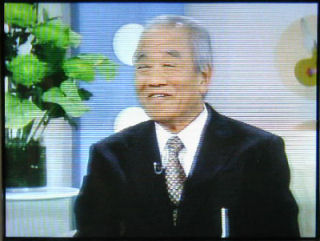 | １０月２７日 今日も暖かい良いお日和だった。昨夜の食事が効いたのかセントポーリアの全部の水遣り等をこなした。扇風機を箱に収め、温風の暖房器具を出した。 来月５日、身障者の国体が岡山で開かれる。夫の姪に当たる輝代さんの次男はダウン症、３０歳だが、水泳の神奈川代表で出るそうだ。輝代さんは前の日に広島の私に会いに来てくれると言う。 ２時間ぐらい話したい、と言ってくれた。何十年ぶりかで会う事になる。今日電話で概ねの現在を聞いて頭の中に仕舞った。心の確りしたこの人も早６３歳と言う。終戦後、満州から引き上げた家族５人、姉さんは身ごもっていた、あの当時の話が又、繰り返されるであろう。今、ご主人は肝臓がんで治療中だそうで前向きな家族である。 寝る前１時間、恵理のアルバム、スキャナ２３枚済ませる。 １０月２６日 この２、３日 心身のアブノーマル状態を持て余した。欝を感じる。老いると言うのはこれだと思う。食欲がないので惰性で食べないから体力が無くなる。 今夜はビール小缶１個で胃を刺激して食事を摂った。 不思議に食べられた。 先日頂いた里芋を昨夜遅く大根人参昆布などと煮て置いた。生秋刀魚を焼き湯豆腐ならぬ冷奴に生姜をおろし、ポン酢をかけた。友人から送られた新米が甘く美味しく、お代わりをしました。 昼、スタジオ・パークに河合隼雄さんがお出になった。文化庁長官・心理学者、渡邊あゆみアナウンサーとのお話が活発で楽しかった。フルートを聴かせて下さった。この頃昼間、ＮＨＫを見ていると流されて、時間が早くたってしまい、本当のおばあちゃんの暮しになりそうだ。 扇風機の解体掃除も済んだ。今日は秋晴れ、ストーブを出したり、２階を片付けて次のステップにかかりたい。 |
| １０月２４日 今日今年初めての灯油を２缶求める。１缶¥１１９０ ファックスのインク紙が切れ、デオデオに電話を掛け送って貰うように頼んだ。夕方近くホームセンターへ行く、１畳の暖房用カーペットが欲しかったが気に入ったものが無く、次回に回し座布団的な４５センチ四方のホッとカーペットを買った。足元に置き強弱の調整が出来るのでプチと共用出来そうだ。 昨日のすき焼きに葱と卵、糸こんを足して夕食を済ませる。りんごを少し薄切りにしてデザートにした。今日も義歯の調整に行けなかった。風邪は本復していないからもう少し時間がかかりそうだ。 暦、今日は霜降 スマップやきよしとこの夜を流しつつ雑誌をつまみ読みした。本物の冬になるまでの過渡期は、風邪を引き易いから要注意。 １０月２２日 さすが昨日は疲れが出た、集中力はあるが、持続は難しい年齢だから致し方ない。２度お会いした先生に３度お会い出来るだろうか。老いを生きる為のエネルギーを頂いたと確信する。 朝が寒くなった。赤いカシミアのセーターを着て、カーディガンを羽織る。冬用の下着を着て冷えの予防、ソックスも冬用。昨夜も今朝も喉と鼻の治療（これは努力そのものだ、きつい）そのお蔭でのどの腫れはひき、何とか風邪の状態から抜け出せそうだ。 午後３時、デオデオへ プリンターのインクを買いに行く。マゼンダーが減りやすい。マゼンダー以外に年末用に一揃いと植物用蛍光灯２本も買い求め、未だ４時半なので宝町のフジグランまで走った。目的は冬用の足カバー、去年は早川さんが此処で早々と買って下さったっけ。「昨日入ったばかりです」と店員が言う、これを買って置けば冬は安心。暮れ方の街を帰路に着く。約２時間の外出、玄関は真っ暗、プチが声高く出迎えてくれた。 ２１日横浜よりハワイ・アルバム、ＣＤ・Ｒ着く。 |
| 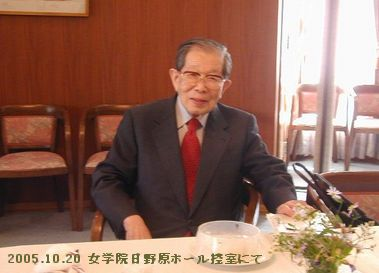 | １０月２０日 １１時吉川さんから℡あり、日野原先生が女学院でお話をされるから行きませんかとお誘いがあった。ブランチが済んだばっかりだったが行きたいと答え、忙しくなった。１２時半からとの事で急である。支度をして１２時前に家を出た、車で５分余りで着く。女学院の日野原ホール５階で刷り物を頂き、教会の集会である事がわかった。先生のお話、「信仰・望み・愛」コリントの信徒への手紙１３章１節〜１３節、讃美歌は９０番ここもかみのみくになれば、女学院の司会者の方のお話しによれば午前中は牛田小学校で子供達にお話しをされ、３０分も延長され、昼食の時間もそこそこにこの席に来られた様子である。愛についてのお話は解り易く、私は涙が流れて困った。終って控え室に歩かれる先生の後を控え室まで付いていってしまった。会場で皆パチパチ撮っていたが私はできなかった。職員の方に私は昔、聖路加に居た者ですがお写真を撮らせてくださいとお願いした。 大昔、友の会の催しで日野原先生を招かれた事があった。平和公園、フェニックスホールで開かれたが、幹事の角田さんのご厚意で講演後、控え室で先生に寸時お会いしたことがある。 その時と全く同じ言葉を今日も口にしていた。 あの時は、何時ごろ聖路加に居たか？と聴かれ、主任看護婦の名前を言った。２階の”おしゅんさん”・・・・先生は「あぁ、じゃぁ山田さんの頃ですね！」と答えられた。 今日は私が、「山田さんの勤務していらしった頃」とお話したら、「おしゅんさんや山田さんの頃ですか！」と応えられた。 「近くによって撮りなさい」と言われたと吉川さんが後で言って居たが私は急いで３枚撮らせて頂きご挨拶をしてその場を離れた。その時の一枚がこのお写真です。この後、原爆慰霊碑、被爆者の睦み園、明日の演奏会の為の小沢征爾さんとの打ち合わせ等９時までの予定が詰まっていらっしゃるそうで本当に私は思い切った行動をとったと直ぐ後顔から火が出る思いだったが、３枚の写真を拝見してお疲れも見せず微笑んでいらっしゃるのでホッとしています。貴女もお元気そうですね！と言うお言葉が耳に残っている。思いがけない感謝な日になりました。 |
| 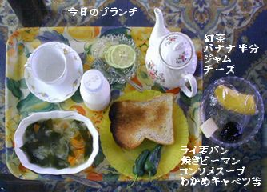 これに後でウインナーを１本齧っている。この日何故 か牛乳が飲みたくなくて中止した。 このポットは昔昔 土屋さんがプレゼントして下さった物で、小さめのカップに３杯つぎ足しては味わう。角砂糖２個の甘いレモンティ |
１０月１９日 起床８時 ゆっくり用意して食事は昼と一緒の１１時近くになる。朝、水道の水を 暫く流してからポットに入れるが（築４０年鉛管の腐蝕）毎朝うがいの後に必ずスポーツドリンクは飲む（１００ｃｃ位）だからゆっくりのブランチとなる。 ポストの郵便物の中にＮＴＴの領収証が入っていた。光にして確かに料金は安くなった。しかし今月も光の電話料だけなので、ＮＴＴのフリーダイヤルで問い合わせた。早３ヶ月経つのに、ビッグローブと合算したものにまだ一度もお目にかかっていない。既にビッグローブから引き落としが出来ないとて、登録の件で３回書類のやり取りをしている。先月はこの儘だと今月末でインターネットが止まる、と言う予告も受けていたので、心が波立った。 ＮＴＴの電話の向こうの女性が男性に代わり、説明を受けたが、光に変更した時の約束が棚上げされている。合算し、ＮＴＴで請求、と、金額まではっきり判っていた結果、光に変えたのだ。なのに何たる無責任な・・・水掛け論になったので、当時私を光プレミアム・光電話に勧誘したＳさんの出社時間を待つことになった。 その間にビッグローブのカスタマセンターへ電話を掛けてみた、町谷さんと言う方が出て、既に登録されています、と言われ安心した。要するに光電話の請求と、インターネットの請求とは別物だと理解した。 約束と違ってプロバイダーから請求が有るのかも知れない。 業者は今過渡期だ、競争で必死になっているようだから、不都合で色々変更も有ろうから領収証が来るまで待つことにしよう。３回のビッグローブとのやり取りで私は大切な事を学んだ。 私は生活面を近くの郵便局利用で引き落としているが、登録名はプロバイダーの登録と字が違う。ビッグローブ３回目の電話でそれが不可の原因と判った。当たり前だが金融機関は厳しい。 ビッグローブにはお手数を掛けたことになる。 カードでも使っていれば問題なく出来たであろう、老人の悲劇？！であるのかも知れない。 |
| １０月１８日 泰斗の誕生日 夜９時半 携帯へ電話をしたらバックに学生達の応援歌が聞こえた。何処に居るの？「早稲田、皆がお祝いしてくれてるんだ！」 「幾つになったの？」 「２１歳」 素直な答が返ってくる。 今日は久し振りでお山へお参りしてきた。関東は２０号台風の影響で雨の日が続いているらしい、横浜も千葉も留守電！？体調はイマイチよくないが こちらはお天気が良いので２回も洗濯が出来た。用事にかこつけて成るべく室内でも、姿勢よく歩いている。些細な事にも努力が必要なのだ。私は姿勢が良いから若いのだと、皆さんに言われて来たけれど、気をつけてみたら、老人の姿勢になっている。 台所の硬い椅子を部屋に置き、お腹や脚のトレーニングを思い出した時に実行する。この２,３日気温が下がってきたので夜セントポーリアのケースを閉める様になった。朝、湿度でもやっているワーディアンケースの中の葉や株達は活き活きしていて嬉しい、花芽の立ち上がりが楽しみだ！家族になりきっている。 ＬＩＬＹさんから頂いた株は健やかです。こんなにセントポーリアに真剣に取り組んだ事は珍しい、体が弱くなった証拠かもしれません。 |
| 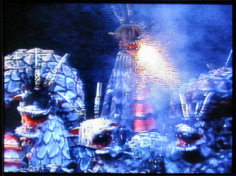 | １０月１７日 何事も憂くてこの日も過ぎ行きぬ。 と こんな一日だった。夜和恵さんから電話で今週来る予定を来月に延ばした、と言ってきた。ハワイの写真、ＣＤ・Ｒを待っているのに、意欲がなくなっちゃうのになぁ！と、がっかりです。 今夜は早く寝ましょう。 １０月１６日 夕方テレビをつけたら広島の神楽団の舞台を見る事が出来た。ニューウエーブ神楽とか紹介されたが、ストーリーは昨夜と同じらしい。おろちは今日は５体でた。写真は一匹が火を噴いた所、翁嫗８人目の娘が大蛇に酒を飲ませ、スサノオノミコトが退治し、あめのむらくもの剣を得る。と言うすじらしい。神楽団は女の人も加わって太鼓や笛をたくみに使いこなしていた。今日は取材にカメラを持って出たが買い物だけで草臥れて行けそうもないので、これ幸いとデジカメでテレビを撮った。祭りは今日まで。朝おみこしが家の前をわっしょいわっしょいと通ったが私は寝ていて玄関前に出て応援して上げられなかった。 今日は私の８６歳の誕生日です。よく此処まで持ちました。 皆様の温かい励ましを頂いて居るからと心から感謝申し上げます。 今朝３時半に咳き込んで目覚め暫く起きて様子を見ました。４時に又横になりましたが、咳をすると失禁を伴います。最早笑い事ではなく、最近は軽いものの用意など怠りません。何事をするにも時間が掛かりますが甘んじて受け止めて今の自分を保ちたいと思っております。 今朝柳沢桂子さんの般若心経のお話をテレビで見ました。これで２回目ですが、心に残りました。 素直な日々で在りたいとおもいます。 |
| 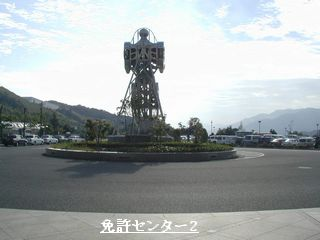 | １０月１５日 夜、お祭りの太鼓が鳴っている。お出でよ！と聞こえた。８時、１人で夜の道を歩くのは心細かったが自然に祭りの神社へ足が向いた。人気の少ない道を２０分位歩き、神社の暗い石段を手すりに掴って登った。境内に入ると、夜店のにおいが懐かしい！人並みに手を清め、お賽銭を少し上げた後神楽を見た。神楽の舞台前は子供達、後は老若男女で埋まっている。その群れの後ろで若い女の子３人の間から神楽を見た。今までに一度も見たことがない。舞台はおろち退治の場面になっていた。スサノオノミコトと３頭のおろちの闘いの場面は迫力があった。衣装も立派だが、３頭のおろちがとぐろを巻いたり様々なパフオーマンスを見せる。熟練の役者だと感心した。前のかぶりつきの子供達におろちの口が襲い掛かると子供達がきゃあきゃあと声を上げる。中々の楽しい見世物だった。この神楽は明日もやるんですか？と聴いたら「明日は大衆演芸でしょう」と、たい焼き屋のお兄さんが話してくれた。縁日はイカの付け焼きのにおいがして食べたい気を起こさせる。本当に懐かしかった。綿飴のおじさんが退屈そうにしていた。 暗い長い石段を下りて帰途に掛かった。暗い道だけれど三々五々子供ずれも帰ってゆくので思いがけない気まぐれ外出を楽しんだ。結構歩けるではないか！少しずつ鍛錬をしよう。 １０月１４日 多分８６歳と言うのはこの位体が思いどうりにならないものなのであろう。自分で鼻と喉の処置を済ませたが午後耳鼻科へ行きイソジンを頂いてきた、先生は有無を言わせず処置をして下さった、（私は器具の消毒に拘る） 抗生物質は今日で終る。どんよりした空の下、雨がボツボツ降ってきた。雨雲が通り過ぎると止む。お祭りの日が近いので、町内はしめ縄飾りが始まっていた、この組は４時からと回覧が回っていたので、お手伝いが出来た。雨で縄だけになってしまいそうだけれど皆さん総出で顔合わせが出来た。 その後、私は何となく欝的で頭も重痛いので試しに安定剤と痛み止めをのんでみた。間もなく気分が楽になり夕食も美味しく食べられた。お薬をうまく使うことも大切と考える。 昼間、耳鼻科の帰りに新見さんに会った。市からの米寿のお祝いを頂きに行った帰り、と言われた。「車に乗られますか？」と申し上げたら「あぁうれしい！」と言われ、お宅まで送って行く、お宅の前の、友の会が運よく開いていたので、お茶や芽ひじき、晒しこしあん、出し昆布、豆類などを買って帰った。さらし漉し餡（ドライあんこ）を上手に作って餡蜜に備えたい。 昨夜中尾さんから里芋やお野菜を頂いた、その中のチンゲンサイ、ほうれん草の間引き菜が柔らかくて、お父さんが作っていらした頃を懐かしく思い出した。 |
| 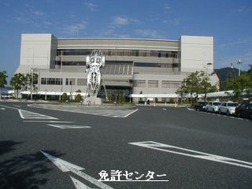 | １０月１３日 朝から体調は悪かった、しかし今日か明日行かなければ免許は貰えないと考えて、実行に及んだ。大袈裟ではない、実際体は熱っぽく頭は重く鈍いのだ。先ず午前中の耳鼻科を休み、自分で治療する、出発に先立ちガソリンを補給、行きはトンネルを通って広域公園前に出る。一回スタンドで聞いて無事免許センターに着いた。３時迄待って手続きを終え、眼の検査と写真で、直ぐに交付された。（先日の教習証が有るから） 問題は帰り道だ。道路が３年前とは全く違った状態になっていて心細かった。 広島→の矢印を頼りにバイパスに出てホッとした。観音から市内に入り、プチの餌などの買い物も済ませて帰宅が出来た。３年間使える免許証を大切にしたい。 やっぱり疲れたようだ、有り合わせを食べた後、薬を飲み眠った。 ９時、高見さんの誕生日だと気がついて大坂に℡し彼女の今を聴く。日本画三昧と水泳、ご主人はテニスと植物作りでお元気、その昔を懐かしみ話した。 「今日の私」を振り返る、知っている場所へは車の運転はＯＫだ。知らない所は心が波立つからストレスになる。運転中、標識が近づかないとはっきり読めないから眼は要注意！車は大切な家族！大きな荷物も沢山積める。感謝！ |
| 木立ベゴニアの一種名前？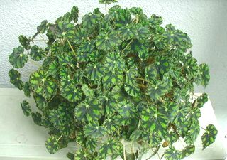 | １０月１２日 歯科、今日義歯が出来た、暫く使ってみて、結果報告に行く約束をする。 息苦しさの原因は扁桃腺が腫れていたのだった。昨夜それに気づき、ルゴールを塗付したら今朝は大分楽になっている、しかし長い間腫れていたので体力が消耗している。医者も自分も気がつかなかったと言う事は如何に私が老いぼれたかの証となった。医者は老人の息苦しさを扁桃腺とは思わなかったようだ。私自身、以前なら自分で喉の腫れに気づき、自分で処置して簡単に済んでいた筈だ。 夕方４時、耳鼻科へ行く。８年前だったねと、先生はカルテを見て仰った。咽頭、喉頭の方まで見て頂く。喉と鼻の治療と、３日分の抗生物質が出た。吸入に通う事になった。うがいを頻繁にしよう。マスクをして寝なさいと夜電話で恵理に注意を受けた。何とか治って明後日までに元気になりたい。 １０月１１日 今朝も１０時まで寝てしまった、生ゴミの収集車は既に引き上げた後だった。体の状態は変わりなし。１１時ブランチを摂っている所へＴＭさんが来られ上がって頂き、話しながら私は食事を済ませた。午後ＪＲの耳鼻科へ行く予定だったが時間が過ぎ、疲れて中止にした。明日は歯科の日だから無理はすまい。 昨夕、買い物がてら久し振りに公園を３周して見た、始めは歩行が弱々しいが２，３回となったら確り歩ける。息苦しさで気分的に参っているな！と自覚する。 今夜は遅くなって薄暗い散歩道２周、買い物を済ませゆっくり帰宅。足腰に力が無いが、続けなければ散歩出来なくなるかも知れない不安あり。 免許センターへ今週中に行く課題を抱えて私は必死です。体力温存、居留守を使っても孤独で暮せ！今夜から早寝の事。 １０月７日 湿布薬がなくなったので血液検査の結果を聞く事も兼ねて新しく変わった病院へ行く。風邪の為、避けていたが朝、風呂に入ったら気分が良くなった。検査の結果は異常なし。 湿布薬は小さい薄手のものが出た。不満だったが試してみようという気にもなった。それを胸に貼ると肌色で丁度良いが膝に貼ると小さすぎる。べたつかない良さもあるので暫く使って様子を見たい。 インフルエンザの申し込みもしてきた、書き込み用紙に必要事項を書いて１１月に入ったら注射を受ける。この病院は薬局に薬剤師さんが５人、内 中年の女の人が１人で使用説明をして下さった。先日私の年を確かめられたので、お名前も記憶していた。いつでも質問できる優しさが有る。先生には頂いた風邪薬より、長年愛飲？しているＴ社の総合感冒薬がよく効くようですと報告した。笑っていらしった。これからお世話になるのに何でも言って置こう！と考えたから。先日初診の時、日野原先生の話が出たしカルテには全て書かれていると信じる。長い時間自分の命を支えて来た自信が自分を守る。人はそれぞれ体が違うからお医者様には早くそれを理解して頂きたい一心である。しかし、私を理解して頂くにはもう少し時間が掛かりそうだ。 |
| 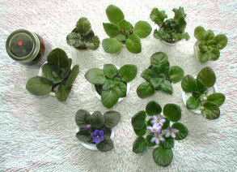 | １０月６日 朝９時半、東北からはるばると LILYさんのお花が着きました。 意外に小さい箱です、開けて先ず勉強をさせて頂きました、花を送る時の心配りです。土が浮かないように配慮され、それぞれが支えあって動かないように並んでいました。花は皆活き活きしていて、清潔感が溢れていました。そっと湿ったペーパーを外し、並べて記念撮影をし、無事安着のお礼のメールを出しました。 先日は皮間さん、今日はＬＩＬＹさん、セントポーリアの大家からの株分けをして頂いたのです。体が弱ってきている自覚は、植物と共に癒されながら静かに暮すこれからを、明るい希望の有るものに出来そうで、心が満ち足りました。 奇麗に咲かせて先輩に喜んで頂きたいと思います。 私は生活内容を欲張らない事にしましょう、今は気管が弱っていて人としゃべると、とても疲れるのでこれが問題です。 申し込んでいた日経のパソコン講座が着いた。数学とやらの難しい事は解らないが、物忘れの多い昨今、脳の刺激になる専門用語などから知りたい事が紐解ければ、それが１ページであっても生き甲斐になるでしょう。 ＬＩＬＹさんの花の中に栗の渋皮煮が一瓶入っていた。ご厚意である。中々開かないので お預けです。昔、私も作りました。 ６０代でした。今は思い出になったそれを、ご馳走になれるなんて、思いがけない喜びです。 あの頃、競って作ったご近所の方もみな高齢になり、面倒な事はしなくなりました。 今日は家族が増えた記念日です。玄関前のエレンダニカも剪定し手入れをしました。 |
| 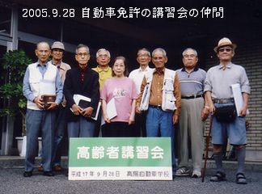 | １０月５日 写真が送られてきたので、どなたの許可もなく写真を最終記念に載せる。プライバシー侵害になるかしら？お許しください。私は４ｃｍ背がちじんだので教習場の車に乗る時、お尻の下に布団や本を敷いて運転した。後３年乗れる許可を得る為に誕生日までに免許センターへ行くのが今の最大課題だ。 今朝メールを開けたらＬi ＬＹさんから嬉しいメールが届いていた。セントポーリアを送って下さったと言う。思わず電話を掛けお声を聞いた。３年前と変わらぬお元気が嬉しかった。今日届くはずのセントポーリア待てど暮せど来ない？！箱の中で草臥れていないか、気になっている。明日が楽しみだ。 好きなＭＹさんが来られ、２時間話したが、お帰りになった後やはり胸が苦しい。当分はおしゃべりは禁物。老人は兎角長引くのだ。独りこつこつ黙って暮すのが一番だと感じた。今日はアイロンかけの日、来客で中断、夜１１じ半終了。ハンカチ、スカーフ、ウールのセーターなど等。１２時過ぎには横になりたい。早く寝ると早く目覚めるようだ。習慣づけたい。 |
| 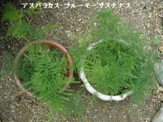 | １０月４日 午後２時歯科行き、義歯上下あわせ、ぴったりで２回カーボンを噛んで終った。驚くべきピッタリ度！口は少し出っ歯になり、結ぶのに意識する。そこで今日の工程は終った。凄い先生だ、完璧だ！すっかり感心してしまった。出来上がっていないし小さい手鏡で顔を見ただけだから人相は悪くなっているかも知れない。が満足だった。如何に見ても４０までいっていない若いにこやかな温かい感じの先生だ。ご夫妻で開業と噂を聞いた。こんな方に出会ったのは初めてだ。あの気難しいＹＫさんが”一回も直さないでぴったりだった” を聴いてこの歯科に来たのだったが正に私も、それを思い、此処に記す。細工は流々仕上げをごろうじろ！を祈る。 帰りにスーパーで北朝鮮の松茸を買った。この間、松茸ご飯を炊いたが、玉川さんに上げたら褒められたので又作ってみようと言う気になった。 矢板から新米を頂いたので¥９８０、開いた大きい２本の松茸で、４合お米を研いだ。最後ちょっと早くスイッチを切って失敗、慌てたがこの時とばかり色々考える。 味付けした松茸と少しの鶏肉を、釜の中のご飯の上に入れて、保温にして１０分。ご飯を摘んで食べたらちょっと硬かったので、蒸し器にお釜ごと入れ（釜がはみ出したが）ふきんを掛け蓋をして１０分蒸した後、電気釜に返して保温状態で暫く置いた。 １３ｃｍ以上もある松茸の傘２個は銀杏に切り軸は丈を３つに切り裂いて味が沁み易くした。鶏肉のもも４切れを小さく切って、そばつゆ２培用、のだしを酒で割り、その中に２０分浸けて置いて炊き上がりにご飯に載せる予定だった。そして保温で熱を通す。が失敗、鶏肉や松茸に熱を加えて安心もしたかったから、蒸し器の出番になったと言うわけです。具を浸けるだしはそばつゆ、大匙４〜５杯、お酒同量〜お好みで 具とご飯を混ぜる時、熱くてむらになりやすいけれど、薄味で暫く経つとわからなくなる。 ＮＫＡＯさん、ＭＺさんから美味しかったと電話を頂いた。梶さんは取りに来て貰って、二人暫く話した後、一人前を持って暗くなった夜道を送った。 北朝鮮の松茸はにおいがよく安い。是非お試しあれ！！ |
| 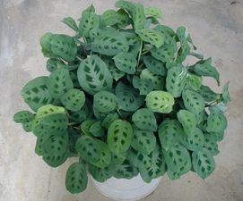 | １０月３日 セントポーリアの為にクーラーを入れる２６度。折角の花が痛むといけない。今日もセントポーリア用の器物や台所の食器乾燥機などを漂白したりして奇麗に整えた。昨日、私が留守電にしていたので安沢のいくさんが横浜へ電話をしたらしい。家へも横浜へも新米がごっそり届いた。いくさんは足の具合が良くないらしい、それなのに気を使ってくれている。電話を掛けて話を聞く。フアックスに私の近況をメールで書き、印刷して送った。喉や気管が弱いので大きい声で話をすると疲れて後がダウンすると、いい訳を書いた。いくさんの歩けない痛みに比べたら大した事ないのにと反省する。３回手術をして歩き始めたのに、遠いのがじれったい。和恵さんがパソコンをつけたので連絡をする、横浜にも米が届いた直ぐに電話を掛けたそうだ。一昨年まで車で走っていたのに、これから寒くなればリハビリも難しい。どうするのだろう？娘の延子さんがパソコンやっていればと、URLを書いて置いたが今はやめたらしい。高校男子・中学女子と可愛いお孫さんが居るから、と思えど、気になる。 私も弱者だ、何時、寝たきりになるか解らない。ならないように努力をしているが、どちらを向いても老人ばかりで気が重い。 気を取り直して明日は、マランタやピレアを切って、コップざしをします。欲しい方はお申し越し下さい。白い根が出て蒸れなくなったら郵送できるかな？（１束５本くらい１０月末） 冬は室内。土は赤玉中、小、混、５ バーミキュライト３ 腐葉土２ か、ピートモス ごっそり根から切っても後奇麗な葉っぱが出ますから春５月には又切って、どんどん増やせます。 |
| １０月２日 ６時プチに起こされてガラス戸を空け外に出した後又寝床に入った。チャイムで起こされた、時計は１０時を指している。どなたですか？と声を掛けた。シャッターを開け屋根屋さん夫妻がドアの前に立っている、私は寝巻のまま、玄関に座り込んだ。だるいし熱っぽい。奥さんが今日は赤飯を炊いたから持って来ました、具合が悪いのですか？ 私は何と答えたのか憶えていない。旦那さんは私が寝床から出たままの姿なので後ろに控えていてくれた。奥さんがお赤飯とおかずを手渡してくださった、温かくて出来立てだと解った。 どんな事でも呼んで下さいよ、誰かが居ますからね、無理をしないで下さいね。私が言い訳めいた事を言ったに違いないが、思いがけなく、美味しい朝ご飯が戴ける嬉しさが先立って、感謝をしてお別れした。 ソフアーに横になりテレビをつけた。プチがうるさくなき、缶詰を欲しがる。与えてゆっくり着替えた。 昨日の今日だ、疲れの反動がこれほど残ると予想しなかった。先ず頂いた栗入りのお赤飯が食べたいので昨夜の貝の味噌汁と糠みその古漬けをだして細かく切り水に晒して生姜も細かく切りかくやづけを沢山作った。疲れた時、時間をかけてもこれを作ってご飯を食べる。温かいお赤飯、くりがいっぱい、卵焼き、金平、かぼちゃの煮つけも温かくて美味しく、２回分入っていたらしい大きいお弁当をいっぺんに全部ご馳走になった。うまい！感謝だなぁ！！！この状態ではお父さんのお山参り所ではない、テレビを付けたままソフアーに横になり又眠った。何回か電話が鳴ったが息苦しいので声を出す気が起らない。２時過ぎ？パソコンを開けた、昨夜遅く雑１７Pを作って簡単に日記を記しただけが、気になって見たかった。パソコンを開けた途端、和恵さんからチャットが入った。声が出ない、話すと疲れるから電話にも出ない。と書いたら、解った、安沢から横浜に電話が有って、お米を送ったと言って居る。我が家に１ヶ月半前に沢山お米が届き未だ手もつけていない。大きい荷物が台所にあるが、横浜に送るのも重くて面倒なので其の侭に過している。植物植え替えの力が有るのにそっちには気が向かないのだ。 昨日の話に戻る。皮間さんから聞いていた、イベント会場、南区の健康福祉センターをようよう探せた、目的の８階イベント会場には１２時に着いた。体操競技の昼休み皆お弁当を広げている。受付の人がここで待っていて下さいと言われて３０分掛かった、袋を持って現れた皮間さんとのやり取りは僅かで済み。お花の袋を二つ持って帰途につく。丁度娘さんも来て居られた、車の所で私の家にも寄って下さいと話した。近いので５時に来られる約束をした。帰途広島屋へ寄り美味しいフレッシュフルーツゼリーを２個買った。所が帰宅して気づいたら携帯の入った手提げ袋を広島屋に忘れて居る、再び昭和町まで走った。そんな事が疲れの原因なのです。 ５時には京子さんと４年生の坊やが来ました。ストレプト・カーパス？の花鉢をお土産に下さった。私はお兄ちゃんが待っていると思い、皆で食べるようにと、ゼリーやソーセージやフルーツなど或るものを持たせてバイバイしました。 まるで私の家族のようで楽しみました。 エスプレッソコーヒーは坊やに大好評でした。 こんな事が疲れの原因だったようです。 サービス精神が旺盛な私は自分を忘れて夢中になる癖があるのです。倒れて後止む。まさに年齢を忘れてやり過ぎるのです。 今日は気管部分（胸骨辺）が重くって、誰とも話しがしたくありません。 免許センターは１０日後に行きましょう。 皮間さんのセントポーリア、少し植え替えました。全部眼を通し整理しました、肥料を与えて先が楽しみです。この仕事こそ癒しだ、と作業をしながら感じました、空になっていた玄関のワーディアンケース、今年は奇麗に咲かせてお客様に見て頂きましょう。 今日は誰とも話は出来ませんでしたが、お蔭で我が家のセントポーリアは全員揃って、本番を迎える事ができました。 １０月１日 今日も暑い夏めいた日だった、正午、約束の健康福祉センターへ行き皮間さんからお花を沢山頂いて帰った。帰途広島屋へよる。ご主人脳梗塞で手術され、お元気になられたがもう一回手術をなさるらしい。変わりないいつもの笑顔にホッとする。 夕方５時皮間京子さん（皮間さんの娘さん）と坊ちゃんが訪問してくださった、紫のストレプト・カーパスを頂く。この町の奥の方に住んでいらっしゃる。少時楽しむ。 夕食を摂り１時間ぐらい眠った。セントポーリアの水遣りをする。終ったら１２時に近い。 新しい家族になった花はゆっくり手入れをしよう。楽しみに玄関のケースのトレイに置いた。 今日はお父さんの７回目の命日、一昨日お山へ行っているが、明日の朝、お花の水を取り替えに行こう。 |